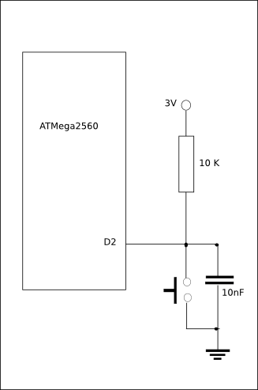

Binary semaphores
Binary semaphores are the tool we use to link interrupts to processes.
In what follows we remind the properties of such semaphores.
Declaring a semaphore (not necessary a binary one)
A semaphore as type sem_t . ( shorthand for RTOS SemaphoreHandle_t ).
Invoking the function semCreateBinary ( shorthand for RTOS xSemaphoreCreateBinary) make it recognized
by RTOS as a binary semaphore.
sem_t semBin ; declare semBin as a semaphore prototype : sem_t semCreateBinary() . example : semBin = semCreateBinary() ;
semGive and semTake
semGive is a shorthand for RTOS xSemaphoreGive and semGet a shorthand for xSemaphoreTake .
These two functions are the only one devoted to a semaphore access.
prototypes : void semGive(sem_t) , void semTake(sem_t) example : semGive(semBin) ; semTake(semBin) ;
Managing binary semaphores
In what follows S is a binary semaphore .
Binary semaphores take only two values : 0 and 1 but we cannot read them.
After the declaration S = semCreateBinary() the value of S is 0 .
semGive
A process P execute semGive(S) .
If there exist a process Q suspended on that semaphore then Q is no longer suspended and becomes ready for
executing .
Else the value of S is set to 1 .
A process who execute semGive is NEVER suspended .
semTake
A process P execute semTake(S) .
If the value of S is 0 then the process is suspended .
Else the value of S is set to 0 and the process continue executing .
Managing interrupts
Interrupts are managed by Arduino's function :
attachInterrupt() .
The two first parameters of that function are respectively : an interrupt number and a function identifier .
The third one denotes the mode the interrupt should be triggered .
Here we are concerned by the function who appears as second parameter.
That function ( the Handler of the interrupt) simply execute semGive(S) when an interrupt occur .
A process P who execute, as first instruction semTake(S) is suspended . ( remind S as value 0 when declared)
When an interrupt occur the Handler is called and P may execute is code. That's all .
Example
In that example interrupts are generated by pushing a button . ( see shematics).
The program implements 3 processes . button, process and Control.
Control is an alternation process with two channels 0 and 1 as inputs.
button if activated by the interrupts handler write in the channel 0 of Control .
process write in the channel 1 of Control every second .

// intrupt.ino
#include < LOccam.h >
sem_t semBin ;
ALT altrn ;
void Handler(){ // active when button's down
semGive(semBin) ;
}
PROC button(void *pvParameters){
static ALT *palt ;
static MSG msg ;
palt = (ALT *)pvParameters ;
msg.canal = 0 ;
msg.data = 100 ;
while(1){
semTake(semBin) ; // suspended . wait for button's down
writeALT(palt, msg) ; // write on channel 0 when ready
msg.data++ ;
}
}
PROC process(void *pvParameters){ // write channel 1 every second
static ALT *palt ;
static MSG msg ;
palt = (ALT *)pvParameters ;
msg.canal = 1 ;
msg.data = 0 ;
while(TRUE){
WAIT(1000) ;
writeALT(palt, msg) ;
msg.data++ ;
}
}
PROC Control(void *pvParameters){
static ALT *palt ;
static MSG msg ;
palt = (ALT *)pvParameters ;
while(TRUE){
msg = readALT(palt) ;
switch(msg.canal){
case 0:{
Serial.print("IT CANAL0 : ");
Serial.println(msg.data) ;
break ;
}
case 1:{
Serial.println(msg.data);
break ;
}
default: break ;
} // switch
}
}
void setup(){
Serial.begin(9600) ;
attachInterrupt(0,Handler,FALLING) ; // interrupt 0 (broche D2 ATMega2560)
semBin = semCreateBinary() ;
NEWALT(&altrn, 2) ;
PAR(button , &altrn) ;
PAR(process, &altrn) ;
PAR(Control, &altrn) ;
START() ;
}
void loop(){}